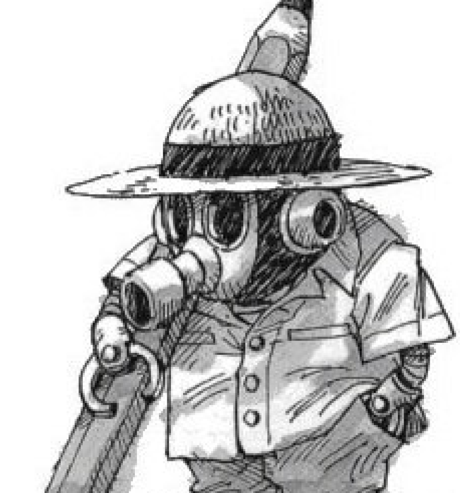

AkiraToriyama1955-2024
Nota de falecimento
"É com profunda tristeza que informamos que o autor de mangás Akira Toriyama faleceu no dia 1º de março devido a um hematoma subdural. Ele tinha 68 anos. É com grande pesar que percebemos que ele ainda tinha várias obras em andamento, com grande entusiasmo. Ele ainda tinha muitas outras coisas para conquistar. No entanto, ele deixou muitos títulos de mangá e obras de arte para este mundo. Graças ao apoio de tantas pessoas ao redor do mundo, ele pôde continuar suas atividades criativas por mais de 45 anos. Esperamos que o mundo único de criação de Akira Toriyama continue sendo amado por todos por muito tempo"
Akira Toriyama
Nascido em 5 de abril de 1955, na cidade de Nagoya, Akira Toriyama iniciou sua carreira como autor de mangás em 1977. Seus primeiros dois trabalhos, Awawa World e Mysterious Rain Jack, foram enviados a um concurso da revista Monthly Young Jump, mas acabaram não sendo publicados à época. Em 1978, Toriyama teve seu primeiro one-shot (mangá de um único capítulo) publicado: Wonder Island.
No entanto, foi em 1980 que Toriyama se tornou um dos autores de mangás mais prestigiados do Japão, antes mesmo de Dragon Ball. Dr. Slump, publicado entre 1980 e 1984, se tornou uma verdadeira febre no Japão e vendeu 35 milhões de cópias mundialmente em 18 volumes publicados, uma média de quase 2 milhões de mangás vendidos a cada nova edição.
Pouco após a conclusão de Dr. Slump, Toriyama, agora com o nome consolidado como um dos mangakas mais importantes do Japão, iniciou a publicação de um das obras mais importantes da história da cultura pop: Dragon Ball. Publicada originalmente no Japão entre 1984 e 1995, a história de Goku se tornou um verdadeiro fenômeno de popularidade global e, ao longo de 42 volumes, vendeu mais de 260 milhões de cópias.
Até hoje, Dragon Ball é o quarto mangá mais vendido de todos os tempos, abaixo apenas de One Piece, com 523 milhões, Golgo 13, com 300 milhões, e Case Closed / Detective Conan (270 milhões). A obra mais popular de Toriyama, porém, tem a melhor média de vendas por volume entre todos esses mangás do top 4 de todos os tempos, com impressionantes 6,19 milhões de cópias comercializadas por volume. A efeito de comparação, apenas Devilman, que vendeu 50 milhões de cópias em em 5 volumes (média de 10 milhões), e Demon Slayer, com 150 milhões de mangás vendidos em 23 volumes (média de 6,52 milhões), superam Dragon Ball nesse quesito.
O sucesso da obra mais célebre de Akira Toriyama nos mangás se expandiu para o mundo dos animes. A primeira fase do mangá de Dragon Ball, focada na infância e adolescência de Goku, rendeu a adaptação de um anime de mesmo nome, exibido originalmente entre 1986 e 1989 pela Fuji TV e posteriormente exportado para o mundo inteiro. A adaptação de 153 episódios, porém, era só o começo.
Foi a segunda fase do mangá de Dragon Ball, concentrada em revelar a origem de Goku e mais detalhes da raça Saiyajin, que transformou a obra de Toriyama em um dos maiores fenômenos da história da cultura pop. Dragon Ball Z, dividida em quatro sagas principais - Saiyajins, Freeza, Cell e Majin Boo - tornou-se uma verdadeira febre mundial e elevou o nome de Toriyama ao Olimpo dos animes e mangás.
Dragon Ball Z teve um total de 291 episódios exibidos originalmente entre abril de 1989 e janeiro de 1996 no Japão, mas se tornou um verdadeiro fenômeno no Brasil somente no começo dos anos 2000, quando o anime foi exibido por emissoras como Band e Globo, na TV aberta, e Cartoon Network, na TV fechada.
Mesmo após a conclusão do mangá de Dragon Ball, Toriyama continuou trabalhando em diversos outros projetos de menor duração, como Kowa, Kajika, Neko Majin e Sand Land.
Em 2015, Akira Toriyama começou a trabalhar em uma continuação de Dragon Ball em mangá, ao lado do artista Toyotarou. Toriyama criou os conceitos e argumento geral do universo de Dragon Ball Super, com Toyotaru sendo o responsável por fazer as ilustrações e escrever os diálogos do mangá, que já teve 22 volumes publicados, um anime de 131 episódios, exibido entre 2015 e 2018, e 2 filmes: Dragon Ball Super: Broly (2018) e Dragon Ball Super: Super-Herói. Além disso outros dois longas ligados ao universo de DB Super foram aos cinemas antes mesmo do começo a publicação do mangá: Dragon Ball Z: A Batalha dos Deuses e Dragon Ball Z: A Ressurreição de Freeza, ambos com roteiro de Toriyama.
Além do sucesso no mundo dos mangás, animes, cinema e, consequentemente, na venda de itens como roupas e brinquedos, Akira Toriyama também foi uma figura célebre no universo dos games. Para além dos próprios jogos de Dragon Ball, Toriyama foi designer de personagens ao longo de toda a história da franquia de RPGs Dragon Quest, uma das séries de videogames mais populares do Japão. Fora a participação em Dragon Quest, Akira Toriyama também foi o artista por trás do design de personagens de Chrono Trigger, presença constante em listas de melhores jogos de todos os tempos, e do RPG Blue Dragon, lançado em 2006 para o Xbox 360. Além disso, uma adaptação do mangá Sand Land para os videogames chega no dia 26 de abril para PlayStation 5, Xbox Series X, Xbox Series S, PC e PlayStation 4. O título é desenvolvido pelo estúdio ILCA e publicado pela Bandai Namco.
Obras
- Awawa World (1977, nunca publicado comercialmente, entretanto fora compilado nas edições 5 e 6 dos boletins BIRD LAND PRESS, destinados ao fã clube oficial Toriyama Akira Hozonkai - 鳥山明保存会).
- Mysterius Rain Jack (1978, nunca publicado comercialmente, entretanto fora compilado nas edições 3 e 4 dos boletins BIRD LAND PRESS, destinados ao fã clube oficial Toriyama Akira Hozonkai 鳥山明保存会).
- Wonder Island (1978-1979, 2 revistas simples)
- Today's Highlight Island (1979, 1 revista simples)
- Tomato (1979, 1 revista simples)
- Dr. Slump (1980-1985, 18 tankōbon, kanzenban)
- Escape (1981, 1 revista simples)
- Pola & Roid (1981, 1 revista simples)
- Hetappi (1982, 1 tankōbon, lição de desenho) - Co-autor: Akira Sakuma
- Pink (1982, 1 revista simples)
- Mad Matic (1982, 1 revsta simples)
- Chobit (1983, 2 revistas simples, Não confundir com Chobits, desenhada por Clamp)
- Dragon Boy (1983, 2 revistas simples)
- Tongpoo (1983, 1 revistas simples)
- Toriyama Akira's Manga Theater Vol.1 (1983, 1 tankōbon)
- Dragon Ball (1984-1995, 42 tankōbon, depois redistribuído em 34 kanzenban edições especiais)
- Mr. Ho (1986, 1 revista simples)
- Lady Red (1987, 3 revista simples, mangá com temática adulta)
- Kennosuke (1987, 1 revista simples)
- Sonchoh (1987, 1 revista simples)
- Mamejiro (1988, 1 revista simples)
- Toriyama Akira's Manga Theater Vol.2 (1988, 1 tankōbon)
- Karamaru (1989, 1 revista simples)
- Wolf (mangá) (1990, 1 revista simples)
- Cashman Saving Soldier (1991, 3 revistas simples - 1998, 1 tankōbon)
- Dub & Peter 1 (1992, 4 revistas simples)
- Go! Go! Ackman (1993, 11 revistas simples)
- New Dr. Slump (1994, 3 tankōbon finos, nada relacionados com o anime de 1998)
- Chotto Kaettekita DR Slump (terceiro mangá)
- Tokimecha (1996, 1 revista simples)
- Alien X-Peke (1997, 1 revista simples)
- Bubul (1997, 1 revista simples)
- Toriyama Akira's Manga Theater Vol.3 (1997, 1 tankōbon)
- Cashman Saving Soldier/New Cashman Saving Soldier (1998, 1 tankōbon)
- Cowa! (1998, 1 tankōbon)
- Tahi Mahi (1998, 1 tankōbon)
- Kajika (1999, 1 tankōbon)
- Sand Land (2000, 1 tankōbon)
- Neko Majin (2000-2005, 5 revistas simples, 1 tankōbon/kanzenban)
- Kochikame (2006, 1 revista simples, omake)
- Cross Epoch (2006, 1 revista simples)
- Dr. Mashirito Abale-chan (2007)
- Sachie-Chan Guu! (2008, 1 revista simples) (em parceria com Masakazu Katsura)
- Biosphere 2030 (2009)
- Jiya (2010) (em parceria com Masakazu Katsura)
- Kintoki (15 de novembro de 2010, One-shot lançado na Weekly jump)
- Ginga Patrol Jako (Mangá Comic dezembro 2013 Revista V-Jump)
- Dragon Ball Minus (2014, 1 Tankōbon, Weekly Shōnen Jump)
- Dragon Ball Z (Filme 2015)
- Dragon Ball Super (Em publicação na revista V-Jump)